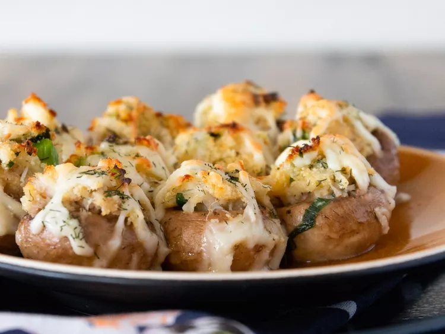

Crab-Stuffed Mushrooms

Description
These crab-stuffed mushrooms are easy to make and sure to be a
favorite at your next get-together! They have amazing flavor packed
into small bite-sized servings!
Ingredients
- 2 tablespoons butter
- 2 tablespoons minced green onion
- 1 cup cooked crab meat, finely chopped
- 1/2 cup dry bread crumbs
- 1/4 cup shredded Monterey Jack cheese
- 1 egg, beaten
- 1 teaspoon lemon juice
- 1/2 teaspoon dried dill weed
- 1/2 cup butter, melted
- 1 1/2 pounds fresh button mushrooms, stems removed
- 1/2 cup shredded Monterey Jack cheese
- 1/4 cup dry white wine
Steps
- Preheat oven to 400 degrees F.
-
Melt 2 tablespoons butter in a skillet; cook and stir green
onion until softened, about 2 minutes. Transfer green onion to
a bowl. Stir in crab meat, bread crumbs, 1/4 cup Monterey Jack
cheese, egg, lemon juice, and dill weed until well mixed.
-
Pour 1/2 cup melted butter in a 9x13-inch baking dish; turn
mushroom caps in butter to coat. Fill mushroom caps with the
crab mixture and sprinkle with remaining 1/2 cup Monterey Jack
cheese. Pour white wine into baking dish.
-
Bake in preheated oven until cheese is melted and lightly
brown, 15 to 20 minutes.
References
Crab-Stuffed Mushrooms Recipe on AllRecipes.com